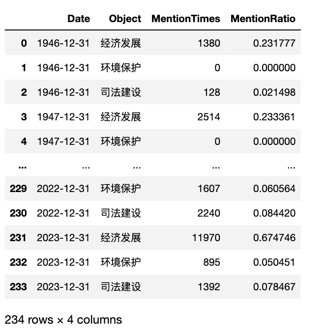

一、任务
新闻数据集 | 含 人民日报/经济日报/光明日报 等120家媒体(2024.05)
利用 经济日报和人民日报 这两套数据集，可以生成面板数据，字段有
- Object 提及的概念词(Object)，可以是某类概念词(创新/三农) 或 行为主体(省、市、公司法人）。
- Date 日期， 粒度可以是年(月、周、日)
- MentionTimes 在Date期间，提及概念词(Object)的新闻条数
- MentionRatio 在Date期间，提及概念词(Object)的新闻条数/总新闻条数
今天利用该数据集， 生成 省份、日期(周/天）、提及该省新闻次数、提及该省新闻占比 面板数据。
二、数据操作
2.1 原始数据格式
今天更新这两个数据集， 增加 经济日报csv.gz 和 人民日报.csv.gz。 已购买 经济日报csv.gz 和 人民日报.csv.gz的同学，可以微信 37233539 ，来获取这两个文件。
2.2 读取数据
pandas可以直接读取 经济日报.csv.gz 和 人民日报.csv.gz 压缩文件，且这样读取的速度是比 经济日报.csv 和 人民日报.csv 要更快的。
import pandas as pd
jjrb_df = pd.read_csv('经济日报.csv.gz', compression='gzip')
rmrb_df = pd.read_csv('人民日报.csv.gz', compression='gzip')
jjrb_df['date'] = pd.to_datetime(jjrb_df['date'])
rmrb_df['date'] = pd.to_datetime(rmrb_df['date'])
rmrb_df
2.3 记录存储形式
这两个新闻数据， 任意日期(日)内一般都会有多条新闻记录， 每条新闻记录是以一行单独存储。
以 rmrb_df 为例， 查看 2013-06-08 新闻记录，可以看到有多条记录。
#任意日期
rmrb_df[rmrb_df['date']=='2013-06-08']
三、生成面板数据
因为 人民日报 和 经济日报 的数据格式基本一样，接下来以 人民日报 为例， 逐步生成 省份、日期(年度）、提及该省新闻次数、提及该省新闻占比 面板数据， 字段名定义为 Object、Date、MentionTimes、MentionRatio。
provs = ['浙江省', '山东省', '新疆维吾尔族自治区', '上海市', '四川省', '重庆市', '海南省', '河北省',
'广西壮族自治区', '云南省', '黑龙江省', '河南省', '内蒙古自治区', '北京市', '宁夏回族自治区', '甘肃省',
'安徽省', '吉林省', '陕西省', '湖北省', '青海省', '江西省', '天津市', '山西省', '广东省',
'贵州省', '福建省', '西藏自治区', '湖南省', '江苏省', '辽宁省']
prov_date_counts = []
for date, weekly_df in 人民日报_df.groupby(pd.Grouper(key='date', freq='Y')):
for prov in provs:
mention_times = weekly_df['content'].fillna('').str.contains(prov).sum()
data = {'Date': date,
'Object': prov,
'MentionTimes': mention_times,
'MentionRatio': mention_times/len(weekly_df)
}
prov_date_counts.append(data)
panel_df = pd.DataFrame(prov_date_counts)
panel_df
panel_df[panel_df['Object']=='浙江省']
四、封装代码
我封装了代码， 大家可以拿来直接用。 支持csv/xls/xlsx新闻类文件数据， 字段可设定，周期(年Y月M周W日D时H)可设定。
4.1 generate_panel_data
generate_panel_data(file, objects, text_field=‘content’, date_field=‘date’, encoding=‘utf-8’, freq=‘W’)
- file 数据文件路径， .csv 或 .csv.gzip、xlsx、xls
- objects 支持list和dict
- text_field 指定数据文件中「文本」字段名，默认为’content'
- date_field 指定数据文件中「日期」字段名，默认为’date'
- freq 生成面板数据日期的周期， 年Y、月M、周W、日D、时H
- encoding 数据文件编码格式， 默认utf-8编码， 可能有的csv文件需要调整该参数
返回DataFrame，DataFrame字段含 Date、Object、MentionTimes、MentionRatio
def generate_panel_data(file, objects, text_field='content', date_field='date', freq='W', encoding='utf-8'):
"""
- file 数据文件路径， .csv 或 .csv.gzip、xlsx、xls
- objects 支持list和dict
- text_field 指定数据文件中「文本」字段名，默认为'content'
- date_field 指定数据文件中「日期」字段名，默认为'date'
- freq 生成面板数据日期的周期， 年Y、月M、周W、日D、时H
- encoding 数据文件编码格式， 默认utf-8编码， 可能有的csv文件需要调整该参数
返回DataFrame，DataFrame字段含Date、Object、MentionTimes、MentionRatio
"""
#读取数据文件
if 'csv' in file:
try:
df = pd.read_csv(file, compression='gzip', encoding=encoding)
except:
df = pd.read_csv(file, encoding=encoding)
elif '.xlsx' in file:
df = pd.read_excel(file)
elif '.xsx' in file:
df = pd.read_excel(file)
else:
raise ValueError("目前只支持csv、xlsx、xlsx三种文件格式")
#更改日期格式
df[date_field] = pd.to_datetime(df[date_field])
prov_date_counts = []
#构造面板数据
for date, freq_df in df.groupby(pd.Grouper(key=date_field, freq=freq)):
#objects为list的操作
if isinstance(objects, list):
for obj in objects:
#统计出现obj新闻的次数
mention_times = freq_df[text_field].fillna('').str.contains(obj).sum()
data = {'Date': date,
'Object': obj,
'MentionTimes': mention_times,
'MentionRatio': mention_times/len(freq_df)}
prov_date_counts.append(data)
#objects为dict的操作
elif isinstance(objects, dict):
for key, words in objects.items():
#统计某概念词words出现的新闻的条数，等同于object出现次数。
mention_words_times = freq_df[text_field].fillna('').str.contains('|'.join(words)).sum()
data = {'Date': date,
'Object': key,
'MentionTimes': mention_words_times,
'MentionRatio': mention_words_times/len(freq_df)}
prov_date_counts.append(data)
else:
print('传入的objects参数有问题， 该参数必须是列表或字典')
break
panel_df = pd.DataFrame(prov_date_counts)
return panel_df
4.2 plot_figure
def plot_figure(panel_df, title, object_field='Object', date_field='Date', value_filed='MentionRatio'):
"""
panel_df: 面板数据
title: 折线图标题
date_field: panel_df中的日期字段
value_filed: panel_df中的要绘图的值的字段名
"""
import matplotlib.pyplot as plt
import matplotlib
import scienceplots
import platform
import pandas as pd
import matplotlib_inline
matplotlib_inline.backend_inline.set_matplotlib_formats('png', 'svg')
import jieba
import warnings
warnings.filterwarnings('ignore')
plt.style.use(['science', 'no-latex', 'cjk-sc-font'])
system = platform.system() # 获取操作系统类型
if system == 'Windows':
font = {'family': 'SimHei'}
elif system == 'Darwin':
font = {'family': 'Arial Unicode MS'}
else:
font = {'family': 'sans-serif'}
matplotlib.rc('font', **font) # 设置全局字体
panel_df[date_field] = pd.to_datetime(panel_df[date_field])
new_df = pd.pivot_table(panel_df,
index=date_field,
columns=object_field,
values=value_filed)
ax = new_df.plot(figsize=(10, 5))
# 添加图例，并指定位置和偏移
ax.legend(loc='upper right', bbox_to_anchor=(1.15, 1.05))
plt.title(title, size=15)
plt.xticks(size=12)
plt.xlabel('年份', size=13)
plt.ylabel('新闻提及次数', size=13)
plt.show()
4.3 objects为列表
现在假设我拿到一个csv文件， 知道内部有date、text两个字段，现在我想得到提及 四省的新闻次数的面板数据，周期为月份
provs2 = ['山东省', '河北省', '湖南省', '黑龙江省']
panel_df2 = generate_panel_data(file='人民日报.csv.gzip',
objects=provs2,
#实验数据csv文件的日期字段为text
text_field='content',
#实验数据csv文件的日期字段为date
date_field='date',
freq='Y', #年度
encoding='utf-8')
#panel_df2.to_csv('人民日报新闻鲁冀湘黑四省(objects为列表)年度被提及占比.csv', index=False)
panel_df2
plot_figure(panel_df=panel_df2,
title='人民日报新闻鲁、冀、湘、黑四省年度被提及占比(1946-2023)',
object_field='Object',
date_field='Date',
value_filed='MentionRatio')
4.4 objects为字典
现在假设我拿到一个csv文件， 知道内部有date、text两个字段，现在我想得到提及 三类概念词 新闻次数的面板数据，周期为月份
#数据整理比较粗糙，大家能get到我的意思即可
provs3 = {'经济发展': ['经济', '发展', '建设', '经济发展'],
'环境保护': ['环境保护', '保护环境', '绿水青山'],
'司法建设': ['法律', '司法', '司法建设'],
}
panel_df3 = generate_panel_data(file='人民日报.csv.gzip',
objects=provs3,
#实验数据csv文件的日期字段为text
text_field='content',
#实验数据csv文件的日期字段为date
date_field='date',
freq='Y', #年度
encoding='utf-8')
#panel_df3.to_csv('人民日报新闻三概念词(objects为字典)年度被提及占比.csv', index=False)
panel_df3

plot_figure(panel_df=panel_df3,
title='人民日报新闻经济、环境、司法三类概念词年度被提及占比(1946-2023)',
object_field='Object',
date_field='Date',
value_filed='MentionRatio')
四、获取数据集
新闻数据集 | 含 人民日报/经济日报/光明日报 等 120 家媒体(更新至2024.06)
加微信 372335839， 备注「姓名-学校-专业」
更多数据集，可点击前往 LIST | 可供社科(经管)领域使用的数据集汇总